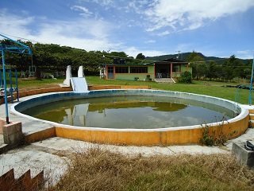
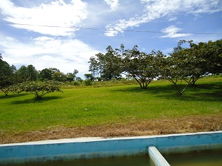
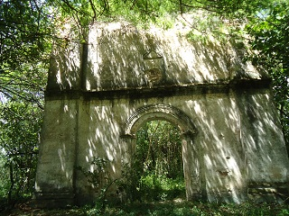
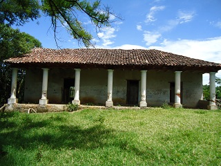
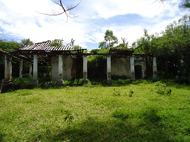

Es una comunidad perteneciente al municipio de Jitotol y que se encuentra a las afueras de este. Se localiza a 5 km de Jitotol.
Los lugares que son más visitados son los restaurantes (uno llamado la Primavera) ya que en el lugar se puede disfrutar de un picnic, entrar a nadar a las albercas o jugar futbol.
Para llegar a las ruinas de lo que fuese una hacienda con iglesia, se pide permiso con los dueños del lugar, ya que ha sido encerrada como propiedad, y se encuentra muy cerca de estos restaurantes.
Lo que se puede observar en estas ruinas son los restos de una iglesia construida entre los siglos XVIII y XIX, pertenecían a una hacienda, de la cual también se pueden observar las ruinas, ya que fueron abandonadas y con el paso del tiempo se fue destruyendo.
Se localiza en el municipio de Jitotol, Chiapas; a 5 km del centro del municipio.
Como punto de referencia tomaremos el arco, que es la entrada principal de Jitotol, y en ese punto tomar la carretera internacional 195, con rumbo a Pueblo Nuevo Solistahuacan, se recorren aproximadamente 5 km del tramo carretero y estaría llegando al lugar.
En el lugar usted puede practicar actividades como:





posicione el mouse o de click sobre las imágenes
{kind=link}
{kind=link}
{kind=link}
{kind=link}
{kind=link}